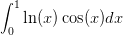

7.4 Exercícios finais
E 7.4.1. O valor exato da integral imprópria  é dado por
é dado por

 ,
,
 e
e  . Como você avalia a qualidade do resultado obtido? Por
que isso acontece.
. Como você avalia a qualidade do resultado obtido? Por
que isso acontece.
Resposta. -0.2310491, -0.2452073, - 0.2478649.

E 7.4.2. O valor exato da integral imprópria  é dado por
é dado por  .
Escreva esta integral como
.
Escreva esta integral como

 ,
,
 e
e  .
.
E 7.4.3. Estamos interessados em avaliar numericamente a seguinte integral:

 .
.
- Aproxime esta integral via Gauss-Legendre com
 ,
, ,
,
 ,
,  ,
,  e
e  .
.
- Use a identidade e aproxime a integral
![∫ 1 ∫ 1 ∫ 1
ln (x )sin(x)dx = ln(x)xdx + ln(x )[sin(x) − x]dx
0 (0 2 2) 0|1 ∫
x-- x-- || 1
= 2 ln x − 4 || + 0 ln(x) [sin(x) − x]dx
∫ 1 0
= − 1-+ ln(x)[sin (x) − x]dx
4 0](main3984x.png)
![∫1ln(x) [sin(x) − x]dx
0](main3985x.png) numericamente via
Gauss-Legendre com
numericamente via
Gauss-Legendre com  ,
,  ,
,  ,
,  ,
,  e
e
 .
.
- Compare os resultados e discuta levando em consideração as respostas às seguintes perguntas: 1)Qual função é mais bem-comportada na origem? 2)Na segunda formulação, qual porção da solução foi obtida analiticamente e, portanto, sem erro de truncamento?
Resposta. a)-0.2472261, -0.2416451, -0.2404596, -0.2400968, -0.2399563, -0.2398928. b)-0.2393727, -0.2397994,
-0.2398104, -0.2398115, -0.2398117, -0.2398117.

E 7.4.4. Considere o problema de calcular numericamente a integral
 quando
quando  .
.
- O que acontece quando se aplica diretamente a quadratura gaussiana com um número impar de abscissas?
- Calcule o valor aproximado por quadratura gaussiana com
 ,
,
 ,
,  e
e  .
.
- Calcule o valor aproximado da integral removendo a singularidade
e aplicando quadratura gaussiana com

 ,
,  ,
,  e
e
 .
.
- Calcule o valor aproximado da integral removendo a singularidade,
considerando a paridade da função e aplicando quadratura gaussiana com

 ,
,  ,
,  e
e
 .
.
- Expandindo a função
 em série de Taylor, truncando a série
depois do
em série de Taylor, truncando a série
depois do  -ésimo termos não nulo e integrando analiticamente.
-ésimo termos não nulo e integrando analiticamente.
- Aproximando a função
 pelo polinômio de Taylor de grau 4 dado
por
pelo polinômio de Taylor de grau 4 dado
por


Resposta.
| n | b | c | d | e | f |
 | 2.205508 | 3.5733599 | 3.6191866 |  |  |
 | 2.5973554 | 3.6107456 | 3.6181465 |  |  |
 | 2.7732372 | 3.6153069 | 3.6181044 |  |  |
 | 2.880694 | 3.6166953 | 3.6180989 |  |  |
Solução do item e: Como


E 7.4.5. Calcule numericamente o valor das seguintes integrais com um erro
relativo inferior a  .
.


- 
 e
e  usando
procedimentos analíticos e numéricos.
usando
procedimentos analíticos e numéricos.
E 7.4.7. Use a técnica de integração por partes para obter a seguinte identidade envolvendo integrais impróprias:


Resposta. 4.1138

E 7.4.9 (title=Ciência dos materiais). O calor específico (molar) de um sólido pode ser aproximado pela teoria de Debye usando a seguinte expressão

 é a constante de Avogrado dado por
é a constante de Avogrado dado por  e
e  é a
constante de Boltzmann dada por
é a
constante de Boltzmann dada por  .
.  é temperatura de
Debye do sólido.
é temperatura de
Debye do sólido.
- Calcule o calor específico do ferro em quando
 ,
,  e
e  supondo
supondo  .
.
- Calcule a temperatura de Debye de um sólido cujo calor específico a
temperatura de
 é
é  . Dica: aproxime a integral por
um esquema numérico com um número fixo de pontos.
. Dica: aproxime a integral por
um esquema numérico com um número fixo de pontos.
- Melhore sua cultura geral: A lei de Dulong-Petit para o calor específico
dos sólidos precede a teoria de Debye. Verifique que a equação de Debye
é consistente com Dulong-Petit, ou seja:

 quando
quando 
Resposta. a)19.2, 22.1, 23.3 b)513.67K